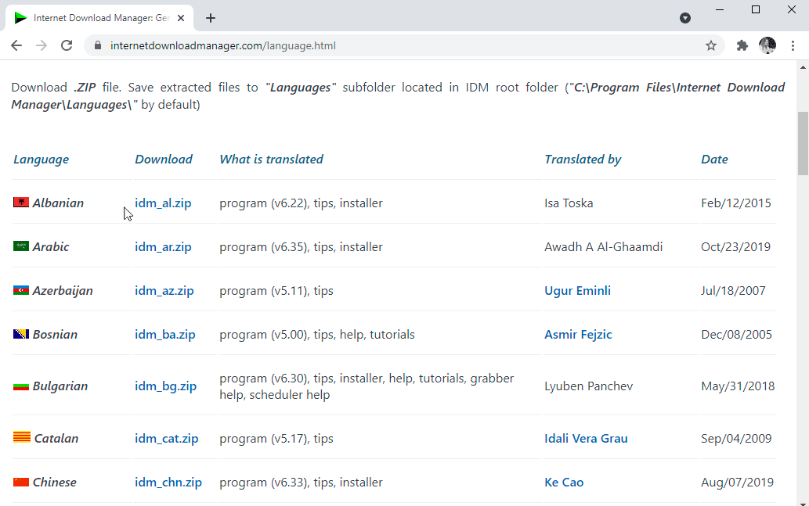

|
Home | News | Features< | Language< | Contact Us | Download | Support | Buy Now | Free Trial |
Download faster and more reliablyInstall Internet Download Manager (IDM) to stop waiting for your downloads. You will be truly amazed how fast IDM downloads your files. IDM will also repair broken and resume interrupted downloads due to lost connections, network problems, computer shutdowns, or unexpected power outages. |

|

|
Powerful download engineOur powerful download engine uses unique algorithms to receive Internet data in a fastest possible way. IDM will accelerate downloads all times because of its innovative dynamic file segmentation technology. Unlike other download managers and accelerators, IDM segments downloaded files dynamically during download process, and it reuses available connections without additional connect and login stages to achieve the best possible acceleration performance. Our engineers have a lot of experience in download acceleration, and we constantly improve this download engine since 1999. |
All popular browsers are supportedIDM integrates seamlessly into Google Chrome, FireFox, Microsoft Edge, Opera, Safari, Internet Explorer, AOL, MSN, Maxthon and all other popular browsers.
We develop browser extensions since 1999, and we have the best engineering solutions available today. IDM offers the
installation of its extensions for
Chrome,
Firefox,
old and
new Edge,
Opera and other browsers.
You need always to keep IDM extensions installed and enabled in browsers to take over downloads from the browsers and to have IDM's right click menu items! If you have any problem, first check that "IDM integration module" extension is installed and enabled in your browser. |

|
|  |
Downloe clickWhen sewith a mouse in a browser, IDM will show "Download with IDM" button. You can also minimize this button in IDM Settings → General tab → Customize download panel in browsers. |
Downlote web sitesAfter in module" browser extension, just continue surfing the Internet, and you will be amazed how easy is to download everything you want from your favorite web sites. |

|

|
Built-in SchedulerInternet Download Manager can connect to the Internet at a set time, download the files you want, disconnect, or shut down your computer when it's done. You can also synchronize changes using periodic synchronization of files. It's possible to create and schedule several download queues for downloading or synchronization. |
Download categoriesInternet Download Manager can be used to organize downloads automatically using defined download categories. |

|

|
Customizable InterfaceYou may choose the order, buttons and columns to appear on the main IDM window. There are several different skins for the toolbar with different button styles. All skins can be downloaded from IDM home site. Also users can design their own skins. Also you can choose the light or dark
IDM
theme.
|